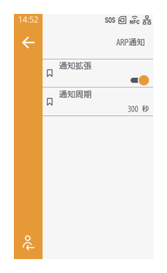
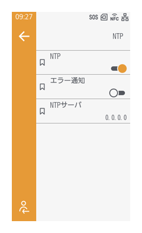
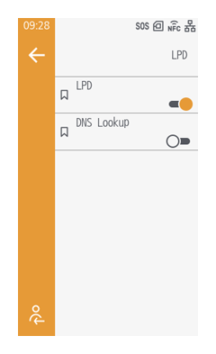
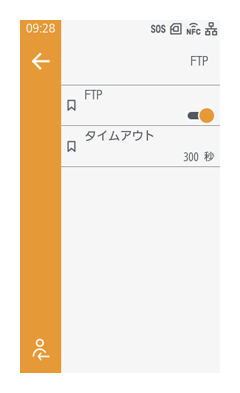
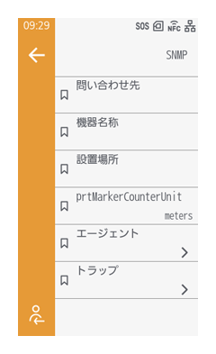
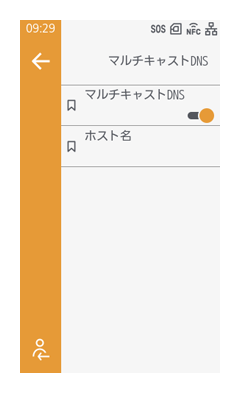
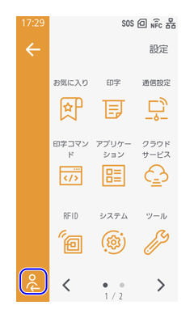
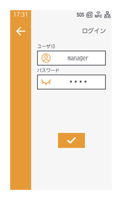
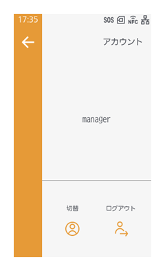
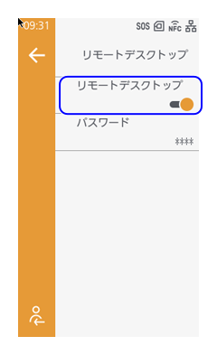

通信プロトコル設定
ARP通知を設定する
［通信設定］ > ［ネットワーク］ > ［ネットワークサービス］ > ［ARP通知］

ARPの通知を拡張すると、DHCPの割り当て後の1、2、4、8、16秒ごとにARPの要求をおこないます。（初期値： 有効）
また、ARP通知の間隔を設定します。（初期値： 日本 300 sec/秒 海外 0 sec/秒）
NTP機能を設定する
［通信設定］ > ［ネットワーク］ > ［ネットワークサービス］ > ［NTP］

NTPを有効にすると、ネットワーク経由でNTPサーバーから時間情報を取得して、本製品の時間を設定できます。（初期値： 無効）
［エラー通知］を有効にすると、エラーを検知したときにNTPエラーメッセージを表示します。（初期値： 無効）

- ［NTPサーバ］には、IPアドレスが通常0.0.0.0（初期値）に設定されています。初期値の場合は、グローバルNTPサーバーが自動的に割り当てられます。特定のサーバーに時刻の同期を要求するときは固有のIPを設定します。
また、［NTPサーバ］には、IPv6アドレスは設定できません。
LPD機能を設定する
［通信設定］ > ［ネットワーク］ > ［ネットワークサービス］ > ［LPD］

LPDを使用した印字をおこなうかを設定します。（初期値： 有効）
また、DNS Lookup機能を使用するかを設定します。（初期値： 無効）
FTP機能を設定する
［通信設定］ > ［ネットワーク］ > ［ネットワークサービス］ > ［FTP］

FTPを使用するかを設定します。（初期値： 無効）
使用する場合は、［タイムアウト］で、本製品のFTPサーバーとクライアント間の接続がタイムアウトするまでの秒数を設定します。（初期値： 300秒）
SNMP機能を設定する
［通信設定］ > ［ネットワーク］ > ［ネットワークサービス］ > ［SNMP］

SNMP機能を使用すると、UDP/IPベースのネットワークを監視および管理できます。
連絡先、機器の名称、設置場所を設定し、［prtMarkerCounterUnit］でサブユニットのカウンタ報告時の単位を設定します。（初期値：［meters］）
エージェント機能（初期値： 有効）、トラップ機能（初期値： 無効）に対して、コミュニティ名、ユーザー名、セキュリティ認証に関する設定をおこないます。
マルチキャストDNSを設定する
［通信設定］ > ［ネットワーク］ > ［ネットワークサービス］ > ［マルチキャストDNS］

マルチキャストDNSを使用するかを設定します。（初期値： 無効）
使用する場合は、ホスト名を指定します。
リモートデスクトップ機能を設定する
リモートデスクトップを使用するには、本製品に管理者権限でログインする必要があります。
以下の手順で本製品に管理者権限でログインし、本機能を有効にします。
- 設定画面でをタップします。
 - ［ユーザID］（「manager」）とパスワードを入力し、
 をタップします。
をタップします。

- 初期設定では、パスワードは「0310」に設定されています。本製品を安全に使用するため、パスワードの変更をお願いします。ログインしたうえで［システム］メニュー内の［パスワード］ > ［パスワード更新］で新しいパスワードを設定してください。
- ログイン後、再度をタップし、アカウント画面に「manager」と表示されていることを確認します。
 - 画面左上の
 をタップして設定画面に戻ります。
をタップして設定画面に戻ります。 - ［通信設定］ > ［ネットワーク］ > ［ネットワークサービス］ > ［リモートデスクトップ］をタップし、有効にします。

本機能を有効にすると、Web設定ページ上から本製品の画面にアクセスし、設定や操作ができるようになります。（初期値： 無効）
［パスワード］で、リモートデスクトップを使用してアクセスする際のパスワードを設定します。
詳しくは、リモートデスクトップを参照してください。